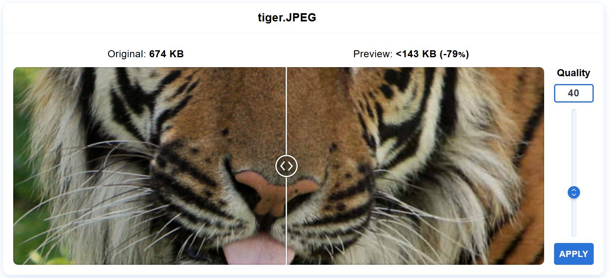

Wanneer je van quality preset 90 naar 70 gaat is het verschil in bestandsgrootte heel veel. Wanneer je van preset 70 naar 40 gaat verspringt de bestandsgrootte niet meer zoveel. Hoe lager je gaat in quality presets hoe minder scherp de afbeelding ook komt.
Uitbreiding: de tekst verandert niet zoveel, tenzij je het op de laagste preset zet zie je een duidelijk verschil en wordt de tekst wat wazig.